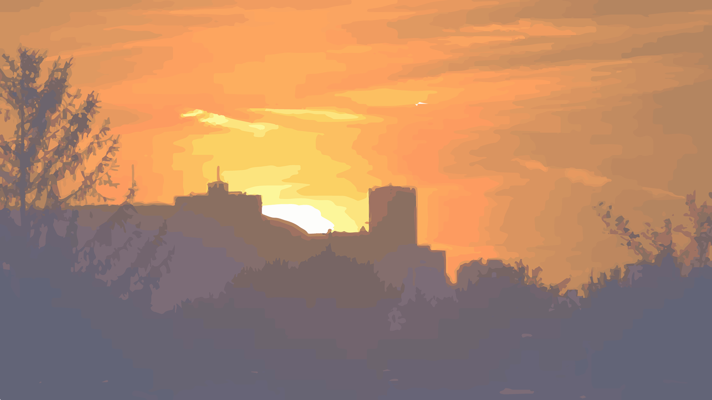
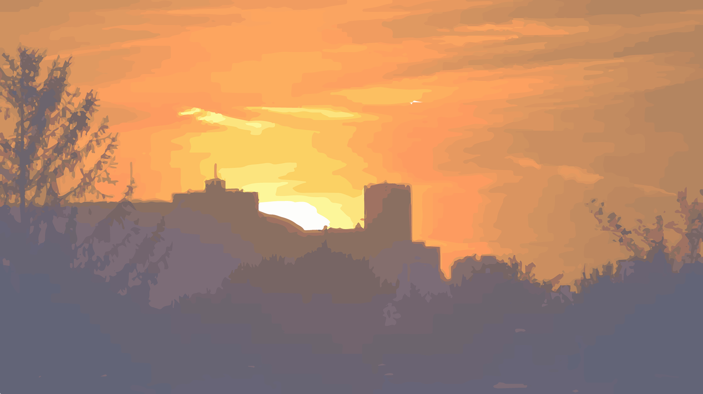

When you come to, you struggle to situate yourself. Were you in the safety of you own room, snoozing away the late morning hours of your day with nary a care in the world? Had you fallen asleep somewhere weird again? You try to move your body, but immediately wince as you feel a particularly bad kink in your neck pulse in discomfort.
Definitely the latter. Just where was it this time?
You sit up, frantically rubbing away at your eyes to try and shake away the lingering wisps of sleep blurring your vision. You groan as you do so, your limbs clenching in disapproval at every tiny flex of your muscles.
Forget where you passed out... what exactly had you been up to last night? You furrow your brows, trying to remember. But, despite your best efforts, the answers just won't come and the more you try to recall, the more frustrated you get.
After a few minutes of fruitless efforts, your nostrils flare in annoyance as you take a deep breath. Why couldn't you remember... and just why wouldn't this damnable blurriness just go away!?
Before you could give it anymore thought, however, you suddenly get an urge to do something. It was a base instinct crying out through every part of your body. You...
[[Reach down.]] [[Look up.]]
<%
s.path = "will";
s.log = "W";
%>
You hastily crouch and plant both hands on the ground. As if by magic, your vision instantly clears and you see the vivid landscape of a city park stretching around you. It is as long as it is wide, with myriad trees framing a single path snaking through it.
You take a deep breath, relishing in the fresh air wafting through your lungs. You look behind you and notice the telltale cheaply manufactured appearance of a park bench. You sit back and lean on it, looking at the sky through the canopy of branches overhead and sigh.
So you had passed out in a park, was it? You didn't recognize this one, but it could have been worse. You shake your head, letting a chuckle pass by your lips. You start to let yourself deflate, but when you do, you start to hear the faint sounds of raucous fanfare in the distance.
Is it coming closer...? You wonder.
Your question answered itself as you heard the noise getting progressively louder. Whatever that was, it would pass by this park sooner or later. You ought to...
[[Approach]] [[Leave]]
<% s.log = s.log + "1"; %>
<% if (s.path == "will"){ %>
You decide to check out what's happening. It was a beautiful day, after all. Not too hot; not too cold. You didn't even have a hangover from what you assumed had been a late night of drinking.
Plus, whatever it was, you could at least see where you had ended up.
You stand to your feet, flexing your knees. Yep, you felt great. A smile tugs at the corners of your mouth as you start walking towards the racket.
With a bounce to your step, you soon get near the source of the fanfare. You emerge from the park and can only gape at what greets you: the largest festival you had ever seen.
The throngs of people celebrating who knows what are shoulder to shoulder, many even hugging each other in delight as they all jumped and cheered to the sounds of trumpets and drums. Fountains of confetti explode overhead, the colorful shreds of paper painting the streets in a new light.
"Hey, come on!"
Your head snaps towards the voice who had surprisingly drawn your attention through the cacophony of noises. You quickly notice a woman wildly motioning you to join in, her friends beside her gesturing towards you in turn.
She's not the only one to notice you standing there with your mouth open either, as many others start looking in your direction.
You have a hard time thinking with all this noise. You...
<% } else if (s.path == "joe") { %>
You decide to approach the person running toward you. He sees you coming closer and seems to put in even more effort. You see him call out to something and you hear a dog's bark in response.
Soon, you a large hound run over to you and you kneel down in preparation to greet it. It soon reaches you and jumps and you excitedly, licking your face all over. You ruffle its fur playfully in response. This dog sure was friendly.
"There you are!" The mask-wearing man slows down to a walk and stops in front of you. "Boss, I'm so glad to see you alive, but please wear this mask, it's dangerous!"
Boss? You wonder. Had you ever seen this guy before? You didn't recognize his uniform, that was for sure.
You accept the gas mask and put it on, asking him why he was looking for you.
"You're kidding right? You had us all worried sick!" He answers. "You took off by yourself the moment you heard about the military intervention. Macaron was worried sick, he couldn't stop looking around base!"
"Macaron?" You ask and are immediately answered by a loud bark. You look to the huge hound of a dog beside you and wonder who gave this beast such a cute name.
"You mentionned a military operation?" You continue.
"Are you sure you're alright, Chief? Did you already forget about it? I thought you wanted to see it, so I looked all over the crowd. Some lady pulled a gun on me! Why would you want to go there?"
Ok, so this guy was a chatterbox and a half. In order to shut him up, you ask him to show you the way to "that place", saying you got lost on the way there. He seems a bit weirded out, but it doesn't take much for him to cave in.
The three of you start walking in the direction the man came from, Macaron hugging your legs as you go. As you walk, you notice more and more of the desolate landscape around you. Buildings are dilapidated and are falling appart. There are seeminly permanent fires consuming everything in sights and there are tons and tons of fallen, decomposing bodies littering the debris-filled streets.
What the hell happened to this place?
Soon, you near the edge of a large crater and peer down into the hole, grimacing at the sight of hundred of people crowding around a single helicopter. Every person in that crowd looked like they had come down with one of the most vile diseases he had ever seen.
"Do you still want to join them down there?" Your companion asks.
You wish to... <% } else { %>
Melissa path goes here
<%} %>
[[Join in.]] [[Watch from afar.]]
<% s.log = s.log + "2"; %>
<% if (s.path == "will"){ %>
You decide to go the opposite direction of where the sounds were coming from. You still have no idea where you are and checking out this city's newest attraction — or whatever this was — seemed a bit counterproductive to getting a hang of the lay of the land.
Cracking your neck, you make your way down the small park trail and emerge onto a busy intersection. You see people milling about and going through their daily routine. It somehow fills you with a sense of security.
You glance at the blue sky. Beautiful day, wasn't it?
[[Flashforward.]]
<% } else if (s.path == "joe") { %>
You quickly turn around and run. You don't waste time looking back and instead run towards a city block full of broken and dilapitated buildings, some parts still up in flames.
You start coughing violently as smoke fills your lungs, but you don't allow yourself to stop. You're confident that you wanted nothing to do with a solider in a mask.
*Bark.* *Bark.*
You hear the sounds of hounds behind. It's almost enough to make you want to give up....
But you continue. You press on with all your might. Thankfully, you soon near the city block and jump over a broken fence, climbing over some debris. However, as you reach the top of the pile and try to find your footing while running down the other side, you trip on something poking out.
"!" You yell out obsceneties as you feel sharp pieces of concrete and steel dig into your skin, carving numerous scars that drew blood. Your momentum doesn't stop and your fall leads you straight into a hole. As you fall into it, your foot hooks onto a fallen banner, pulling it over and effectively hiding where you fell.
You feel your back hit solid ground sharply, losing your breath. You immediately sit up but immediately fall back down as you gasp for air, heaving heavily from deep in your sternum. Thankfully, after a few seconds of agony, you start to calm down, relaxing a bit as you feel the cooler concrete of what you assume to be a basement.
***Bark***
You hear the cries of dogs just above you, but they don't seem to be trying to uncover the hole.
"Shit, we lost them again!" The soldier swears. Although his voice is muted, you can hear the fury laced into it like poison. He doesn't sit still for long, however, as he soon runs off with his dogs in tow.
...Most likely to look for you.
You sigh in relief, trying to regain your bearings. You try coughing up the smoke in your lungs, but to no avail. You curse and start trying to clean up the scrapes and gashes on your arms and legs, but as you start to do so, your hand hits something on the ground beside you.
It's a gun. Some kind of silver magnum inlaid with gold.
You...
[[Loot it.]] [[Don't loot it.]]
<% } else { %>
Melissa path goes here
<%} %>
<% s.log = s.log + "1"; %>
<% if (s.path == "will"){ %>
You decide to throw caution to the wind and just jump in. You embrace your fellow human beings with joy and start cheerfully shouting with them.
You had no idea where you were? No one cares!
You were missing a significant portion of your memories from last night? Doesn't matter!
You had not a single ounce of a clue what this shit was about? Never stopped you from having fun!
You dance and sing and jump until your voice becomes hoarse and your throat dryer than the desert. You throw your arms around strangers you never met and will most likely never see again, but you don't care.
After what seemed like hours of letting yourself be dragged around, you stumble forward into a bit of an emptier section of the parade. As you do, you feel an arm circle around your shoulder, presenting you with a colorful remote. It had a large switch in the center of it.
"Heya partner, isn't it a blast out here?" The person exclaims, smiling widely. They are well groomed and had an air of someone who knew how to party. "But you know what would really light up this place?"
They grin, passing you the remote. You numbly receive the device and give them a curious look. They don't say anything else, merely pointing toward the remote with their chin.
<% } else if (s.path == "joe") { %>
Despite the myriad displays of depravity unfolding before your eyes, you feel like you have to go down there and join them. You feel like you won't be able to understand this world if you don't.
You nod to your new companion, making him shake his head. He seems resigned to the fact that you would ignore his warning.
"I guess that's Chief for you...." He mumbles to himself. He sits down on a broken piece of concrete and taps his foot impatiently, Macaron going to lie down beside him. "I'll wait right here. The others are waiting back at base, so please don't take too long..."
You nod and put your feet just before the edge, a little bit uncertain as to how you would get down. Despite that, you decide to not think to hard about it and just start sliding down slowly.
Mere minutes later, you arrive at the bottom and jog over to the crowd gathering around the helicopter.
"Hey, what's going on here?" You try asking someone, but they just turn and practically hiss at you before going back to trying to climb over others. They all seemed to be fighting over something.
"Gah!"
A blood-curdling scream of pain echoes through the area, but no one pays it any mind. If anything, all of them seem to double their efforts.
This display of savagery shocks you to your core. These weren't human beings... they were nothing but beasts in human suits.
"Disgusting, isn't it?" A smooth, languid voice asks you as someone stops beside you. You glance their way and see a tall woman wearing a grimy white suit.
You shrug in response to their question, making her chuckle.
"It's never an easy sight to take in, that's for sure." She says, but her amused tone betrays her true feelings. She looks directly into your eyes and smiles. "Listen, my organization has another drone full of supplues circling around the area. Beasts or not, we can't let people out here die, you know? Anyway, want to do the honors?"
She hands you a small remote. It has a small screen depicting a small plane and a radar as well as a switch on the side.
You...
<% } else { %>
Melissa path goes here
<%} %>
[[Leave it alone.]] [[Trust them and press the button.]]
<% s.log = s.log + "2"; %>
<% if (s.path == "will"){ %>
You decide to slither away to an alleyway overlooking the parade. You ignore a lot of people's attempts at dragging you in, shaking off the hands the grasp at the cuffs of your jacket and instead trying to discreetly skirt around the celebrations.
After a few minutes, you finally stumble into a small opening. It is less of an alleyway and more of a crack in between industrial apartment buildings, but it does the job of sheltering you from the fesitivities.
You turn around and face the throngs of people carrying signs you have a hard time making out, each and every one of them practically jumping on top of another. It was less of a walk and more of a continous group dance that never stopped.
You lean back on a wall, letting yourself rest in the building's shadow. You are content to observe the festivities for a while, confident that no one would disturb you. However, after only a few minutes, you see a short man peek out of the crowd and towards your direction. You see his eyes widen in surprise and he quickly rushes out towards you.
"There you are!" He exclaims as he stopped in front of you. "I was looking everywhere for you! I'd be in serious trouble if I lost you, y'know?"
*Lost me?* You wonder. You were certain you had never seen this guy in your life. Short and well-dressed, with a sort of beany hat you could never remember the name of; he seemed more like the type of person your parents would have known.
You...
<% } else if (s.path == "joe") { %>
You ruffle Macaron's fur and do your best to not shiver at the sight of death and desperation down there. Your entire being feels repulsed as you see some people trample others to try and reach the vehicle.
You tell your companion you had seen enough. Going down there would only endanger you both. Your companion deflates, his relief clear due to his relaxed posture.
"Great, I'm glad." He mumbles. "I was sure you were gonna run down there for a sec."
You shake your head, saying you didn't even consider it. This makes him laugh awkwardly, as if he was privy to something about you that you didn't remember.
"Well then, I guess we can go back to base?"
This was the moment you were dreading. Despite this guy talking to you like an old friend and this dog sticking to you like you were its owner, you couldn't remember them at all. You couldn't piece together a single ounce of familiarity towards them.
You...
<% } else { %>
Melissa path goes here
<%} %>
[[Pretend you know them.]] [[Tell them you're lost and you have no idea who they are.]]
<% s.log = s.log + "1"; %>
<% if (s.path == "will"){ %>
You shake your head, pushing the remote back into their hand. They shrug and politely bid you goodbye, leaving you to your own devices.
You look back towards the parade and sigh. You had gotten enough partying around for the day, so maybe you'd find a secluded spot somewhere. You close your eyes and take a deep breath, picking a random direction to start walking towards.
Whistling a jolly tune to yourself, you easily miss how your surroundings seem to morph into the familiar streets of your home town.
And so, you had a good time and left it at that, remaining on the sidelines.
<% } else if (s.path == "joe") { %>
You shake your head, pushing the remote back into their hand. They shrug and politely bid you goodbye, leaving you to your own devices.
You look back towards the people crowding around and sigh. You had gotten sick enough today, so you should probably go back up and meet with the masked man and his dog. You close your eyes and take a deep breath.
*Cough.*
Bad idea.... Too much smoke.
Trying to cough out the smoke you just inhaled, you easily miss how your surroundings seem to morph into the familiar streets of your home town.
And so, you were reminded of the depths of human depravity, remaining on the sidelines.
<% } else { %>
Melissa path goes here
<%} %>
<%= window.story.passage("END").render() %><% s.log = s.log + "2"; %>
<% if (s.path == "will"){ %>
You decide to flip the switch and are immediately rewarded with a large rocket bursting out of the alleyway beside you and flying high overhead, exploding in a shower of colorful lights and sparks. The fireworks are a vivid crimson, their brilliance easily visible even against clear midday skies.
You hear hundreds of people simultaneously gasp in awe before returning to cheering over the booming music and fanfare.
You look back to the stranger and shoot them a tentative smile.
"Packed a punch, didn't it?" They grin, putting a hand on your shoulder. "Why don't you keep 'em coming? Plenty where that one came from."
You look down to the remote in your hand and huff. Might as well, right?
You...
<% } else if (s.path == "joe") { %>
You decide to flip the switch and are immediately rewarded with a small drone bursting into the area from in betwixt two decrepit buildings. It stops right over the large crater you're in and starts descending slowly.
You hear hundreds of people simultaneously gasp in awe and start getting agitated, they start running over to your position, making you flinch back.
"Hah! Desperate, aren't they?" She grins, putting a hand on your shoulder. "Why don't you give them what they want? Shower them with supplies... you just need to flip it again."
You look down to the remote in your hand and back to the encroaching people. They all look beyond reason and ready to pry the remote from your hands after running you over.
You...
<% } else { %>
Melissa path goes here
<%} %>
[[Press it again.]] [[Refuse.]]
<% s.log = s.log + "1"; %>
<% if (s.path == "will"){ %>
You gulp, feeling a strange shiver go down your spine, but you nevertheless nod in agreement. Another round of fireworks or two wouldn't hurt anyone, right?
You bring your hand to the switch and flick it. For a moment, nothing happens. You can almost hear the sound of your own breath through the cacophony of the parade, such is your anticipation. However, before you could say anything, you're blinded by a blast larger than you'd ever seen.
Your ears are ringing; your vision is blurry. Despite that, however, the screams of terror and pain that pierce through sear through you better than any branding iron.
You feel a hand on your shoulder and look to the stranger beside you. Their beaming smile had gotten even larger.
You see them say something, but your shattered eardrums prevent you from understanding. They shake their head, almost amused. This time, they say it very slowly, making sure you are able to read their lips.
*Wonderful, isn't it?*
<% } else if (s.path == "joe") { %>
You gulp, feeling a strange shiver go down your spine, but you nevertheless nod in agreement. This should be amount to something good, right?
You bring your hand to the switch and flick it. For a moment, nothing happens. You can almost hear the sound of your own breath through the cacophony of the people rushing your way. However, before you could say anything, you're blinded by a blast larger than you'd ever seen and are knocked down to the ground.
Your ears are ringing; your vision is blurry. Despite that, however, the screams of terror and pain that pierce through sear through you better than any branding iron.
Had you activated some landmines!?
You see a pair of boots by your side and look up to the suited woman. She was beaming with delight.
You think she says something, but your shattered eardrums prevent you from understanding. She shakes her head, almost amused. This time, however, she says it very slowly, making sure you are able to read her lips.
*Wonderful, isn't it?*
Your eyes widen.
<% } else { %>
Melissa path goes here
<%} %>
[[It was wonderful.]] [[Panic.]] [[You are horrified.]]
<% s.log = s.log + "2"; %>
<% if (s.path == "will"){ %>
You get the feeling that flipping the switch again might be a bad idea. You were never good at flirting with ambiguously illegal acts that might land you a night over at the station, but this one seemed obvious enough.
You hand the remote over, shaking your head. They quickly get the message and shrug their shoulders, frowning deeply.
"Giving me the cold shoulder, are ya? Well, can't say I blame ya. Just thought it was a shame, really..." They say, trailing off towards the end. "Well, I can't leave you empty handed, can I? You did show all these people quite the sight."
They dig through their pocket and hand you what seemed to be a box of chocolates. They scratch their head and give you a playful smirk. They tip their hat to you and quickly disappear within the crowd.
*What a weird person...*, you muse.
You look down to the box of chocolates and feel that it's strangely heavy for a simple box of treats. You bring it up to eye level and make out ''Blastbury Caramel'' written in fine print.
***Beep.*** ***Beep.*** ***Beep.***
...And then you hear familiar sounds coming from inside. Each and every pulsing 'beep' seems to slow down time. With shaking fingers, you unwrap the package and tear the lid off, looking in horror at the small contraption hidden within.
It was a bomb. A genuine bomb.
You look at the crowd going about beside you.
You...
[[Leave it there and run.]] [[Take it with you until you can safely dispose of it.]]
<% } else if (s.path == "joe") { %>
You shake your head, pushing the remote back into her hands. You don't want anything to do with this yourself. This venture had nothing but observation as a motive.
Fortunately, she quickly gets the message, but seems very displeased. She frowns deeply.
"Giving me the cold shoulder, are you? Well, can't say I blame you. I just think it's a shame, really..." She says, trailing off towards the end. "Well, I can't leave you empty handed, can I? You did get these nice people all excited, after all."
She digs through her pockets and hands you a small ration wrapped in silvery foil. It feels heavy and dense.
"Protein bar." She explains. "The most nutritious there is nowadays. If you survive, look out for us. We'll treat you to another."
With that, she winks at you and skips off, yelling at the top of her lungs.
"Free supplies? Oh my gosh!"
You feel hundreds of eyes turn your way.
Oh shit.
<%= window.story.passage("END").render() %>
<% } else { %>
Melissa path goes here
<%} %>
<% s.log = s.log + "1"; %>
<% if (s.path == "will"){ %>
You stare at the chaos in awe, slowly nodding. You had known something was off about all of this since getting dragged along in this parade. It was something that shouldn't have even been entertained, let alone given any credit to, and yet...
You couldn't help but notice the complete lack of dissent.
From the most shabbily dressed man to the richest, every single person you had seen had nothing but the widest smiles and most inviting words. It was almost an otherworldy experience.
You see the stranger nod slowly in the corner of your eye. They must have felt it too, then. They look at you and gesture to an alleyway with their head.
You're compelled to follow them.
<% } else if (s.path == "joe") { %>
You stare at the chaos in awe, slowly nodding. This place truly was a hell on earth and there was nothing that could convince you otherwise. But, despite that, you can't help but laugh. What you think of is nothing that could be considered funny, but you laugh so hard that your jaw starts to hurt.
Here, in this hell, you felt more free than you had ever been.
From the most shabbily dressed man to the richest, every single person you had seen had been forcibly devolved into monkeys following their base instincts. It was almost an otherworldy experience.
You see the woman nod slowly in the corner of your eye. She must have felt it too, then...
She gestures for you to follow her and you're compelled to do just that.
<% } else { %>
Melissa path goes here
<%} %>
<%= window.story.passage("END").render() %><% s.log = s.log + "2"; %>
<% if (s.path == "will"){ %>
You shake your head violently. This couldn't be happening. Not being able to believe what you had just done, you fall to your knees and start to hyperventilate.
The stranger frowns in disgust and says a few things you can't possibly make out before leaving.
All you can do is lie down and and try to breathe, but even that is getting hard.
<% } else if (s.path == "joe") { %>
You shake your head violently. This couldn't be happening. Not being able to believe what you had just done, you fall to your knees and start to hyperventilate.
The woman frowns in disgust and says a few things you can't possibly make out before leaving.
All you can do is lie down and and try to breathe, but even that is getting hard.
<% } else { %>
Melissa path goes here
<%} %>
<%= window.story.passage("END").render() %><% s.log = s.log + "3"; %>
<% if (s.path == "will"){ %>
You start violently cursing at the stranger, who seems strangely hurt by the verbal assault. You couldn't hear the sound of your voice at all, but you didn't let that stop you. You clutch them by the color and headbutt them, pointing towards the crowd.
*Why the hell did you set this up!?*
*These are real, living people dying out there!*
*I'll kill you!*
The words don't stop coming. If you stopped, you feel like you would be crushed under the weight of your own actions.
Suddenly, the stranger breaks free from your hold and bolts off into a random direction. However, you are soon hot on their heels.
<% } else if (s.path == "joe") { %>
You start violently cursing at the woman in white, who seems strangely hurt by the verbal assault. You couldn't hear the sound of your voice at all, but you didn't let that stop you. You clutch her wirst harshly and squeeze, pointing towards the crowd.
*Why the hell did you set this up!?*
*These are real, living people right there!*
*I'll kill you!*
The words don't stop coming. If you stopped, you feel like you would be crushed under the weight of your own actions.
Suddenly, the woman breaks free from your hold and bolts off into a random direction. However, you are hot on her heels, still screaming bloody murder.
<% } else { %>
Melissa path goes here
<%} %>
<%= window.story.passage("END").render() %><% s.log = s.log + "1"; %>
<% if (s.path == "will"){ %>
You decide to humor this person, whoever they were. You still had no idea where you were so any information you could get would be nice.
Nodding to yourself, you stand up straight and look down at your newest acquaintance.
"Sorry, thought I'd look around." You say, not a hint of apology in your voice. Surprisingly, the man smirks in response. It's an insidious little thing that sends shivers down your spine.
"Good." He answers, raising his arm to a handshake position. "I'm glad you're quick on the uptake."
You squash down any feelings of apprehension and firmly shake his hand. He seemed more pleased with your grip than he had any right to be, the glint in his eyes telling you this handshake had sealed your fate.
...Whatever that was, anyway.
With a pat on your shoulder that had him stand on his toes, he points towards a door behind you that you hadn't noticed.
"Come on then, everyone's waiting on us."
You...
[[Follow him.]] [[Try to disappear in the crowd (run away).]]
<% } else if (s.path == "joe") { %>
You had nothing to lose from just nodding and following them around, so you quickly agree to go back to base, wherever it was. The masked man and the dog both lead you through the desolate city. You struggle to keep your eyes ahead as you feel yourself lose something you can't quite place with every corpse that you happen to see.
Soon, you all reach the outskirts of a city block, quietly going into a subway station. They lead you down a flight of stairs and underground. You hop over the gates and jump down onto the rails.
"It's still a bit freaky, isn't it?" The man exclaims gesturing to the empty tunnels. "I don't think I'll ever stop expecting to be run over any second."
You agree with him. After years of being told to never come down here, it felt almost alien to do so.
"Anyway, I'm so pumped you're back with us, Chief. I can't wait to get started. These punks have it coming, I tell ya." The man continues, suddenly full of energy. He bounces up and down like a child high on sugar. It would have been somewhat endearing, if not a little weird, had he not said something that caught your attention.
'These punks?' Who exactly was he referring to?
You suddenly get the feeling that continuing to follow this guy would lead you directly into a life of violence. You glance around furtively and spot a service door hidden on the tunnel's right.
You...
[[Follow them.|Follow him.]] [[Bolt for the door.|Try to disappear in the crowd (run away).]]
<% } else { %>
Melissa path goes here
<%} %>
<% s.log = s.log + "2"; %>
<% if (s.path == "will"){ %>
You shake your head and explain that you have no idea where you were, let alone who they are. This parade made absolutely no sense either, you had been standing around for a while and you didn't see a single sign of the throngs of people dancing thinning out.
A weird sense of irritation fills your chest. Who the heck was this guy to talk to you so casually anyway?
"Go away." You mutter blithely, shooting him a glare. He blinks in surprise before shrugging in indifference.
"Well, you'll see what's going on soon enough." He says casually.
Suddenly, you hear a large explosion go off just a block down and the sounds of laughter and joy quickly turn to cries of pain and fear. You round up on the man, taking a fistful of his collar and grit your teeth.
What had he just done!?
"See what I mean?" He smirks, pointing to the crowd with his chin. You look towards the parade and feel the color drain from your face. The parade was still going. The music was still playing.
People covered in blood and burns were still dancing around in joy.
You turn back to the well-dressed man and let go of his collar.
"So, ready to hear us out?" He asks.
You....
[[Refuse and run to the crowd.]] [[Reconsider.]]
<% } else if (s.path == "joe") { %>
You decide to be honest with the guy and tell him you had no fricking idea who he was, let alone what happened to this city.
"Yeaahhh..." The masked man groans, shuffling awkwardly from foot to foot. He seems resigned to something. "I was kind of hoping you'd remember. God, this is awkward."
The man suddenly pulls out a pistol from his belt and points it directly at your face. You freeze and go slightly cross-eyed looking at the nozzle. You slowly raise your arms up in surrender.
"I didn't want this to happen, chief, none of us did." He says softly, the dog barking as if to support his words. "But you caught it... the virus. That's why you decided to leave. People say that memory's the first thing to go; you didn't want to be around much longer if it happened to you."
You shake your head slowly, trying to dissuade him from doing anything drastic. You had never heard anything about a virus, so how could you possibly be infected!?
It couldn't be true, could it?
"I won't shoot you." The man continues. "It's not up to me to end it. It's up to you alone, chief."
As soon as he's finished speaking, he fishes a grenade out of his tool belt and pulls the pin, placing it in your hands. He then shoots you in the foot, making you cry out in pain. You scream bloody murder but somehow prevent yourself from throwing the grenade back at him and killing you both.
He wouldn't shoot you.... of course that was a fricking lie. This place had gone to shit right along with the people living in it.
The masked man quickly runs off, leaving you alone with the primed grenade. You prepare to throw it, but as if to mock you, people start coming out from hiding all around you. Any direction you threw the grenade in would kill someone.
You...
[[Hunch over the grenade, hoping the blast won't hit anyone else.|Refuse and run to the crowd.]] [[Close your eyes and throw it as far as you can.|Reconsider.]]
<% } else { %>
Melissa path goes here
<%} %>
<% s.log = s.log + "1"; %>
<% if (s.path == "will"){ %>
You fall in line behind the diminutive man as he cracked open the door without a sound and you both entered the apartment building. The sounds of the veritable fanfare of chaotic partygoing fades to a dull white noise behind you.
The man doesn't waste his breath on pleasantries as he leads you to an elevator which the both of you ride up in silence. It's only when the elevator nears the topmost floor that he decided to speak.
"Everything'll be clear in a few minutes." He speaks casually.
Was that meant to reassure you? If anything, it only created more questions that you couldn't hope to answer on your own. But, before you could start getting anxious, the doors opened with a soft 'ding' and you emerged upon a room straight out of a high-end tech lab.
*What?* You can't help but wonder as you see the myriad screens stretching from floor to ceiling, wall to wall. The only parts of the room not emanating artificial light were the large round table in the middle of the room and the half dozen people sitting down and staring at you with interest.
...You could immediately tell why, too, as the screens behind them featured your mugshot with the words "Anomaly 1" printed in bold.
<% } else if (s.path == "joe") { %>
As they say— In for a penny, in for a pound. The fact that this guy somehow knows you most likely means that there are others too. That meant security and a place to belong; it was a far cry from the depravity painting the streets outside.
Sure, things would get violent. If you think about it, it's not exactly strange. You'd seen plenty of movies depicting how far removed from common sense people would get when their lives were on the line.
After a few minutes of walking, you all arrive at an inconspicuous grated door that looked like it would keel over at the first signs of a breeze.
"Home sweet home." Your companion says, pushing the door assign and walking down a dark corridor. You follow him inside and you soon emerge in a large room that was illuminated by bluish ceiling lights. Gathered there were half a dozen individuals dressed in similarly tattered military uniforms.
"Chief!" They all exclaim in unison, raising their arms in greeting. But instead of filling you with a sense of belonging, their smiles make you feel slightly nauseous.
Well, it was either the smiles or the firearms pilled up on the table, each spotless and seemingly ready to use.
<% } else { %>
Melissa path goes here
<%} %>
<%= window.story.passage("END").render() %><% s.log = s.log + "2"; %>
<% if (s.path == "will"){ %>
You decide to run as soon as the diminutive man turns around to open the door. Taking a deep breath, you don't hesitate and sprint towards the wall of limbs and heads screaming at the top of their lungs.
"Ahhhh..." You somehow hear the man sigh as he notices you. His voice somehow pierces through all the fanfare. "Careful not to lose your head out there. We might see each other again if you don't."
Not minding his words, you insert yourself into the parade, the people there easily welcoming you and cheering as you embraced them in turn. You are quickly given a large flag that you can't make out, but you nevertheless drape it over your shoulders.
You let yourself be dragged along with the parade as others slowly manage to get you to loosen up and start horsing around as well. You suddenly feel the need to cheer and let out a belching cry.
The people around you gasp in amazement as your voice carries over the music.
Seeing their amazement, you start feeling a little giddy. Your worries seem to disappear and are replaced with a sense of euphoria.
*Wasn't celebrating just great?*
Slowly but surely, you feel everything but the need to cheer and celebrate disappear. You start to lose control of your motor functions, but you don't panic.
Celebrating for the cause is part of your instincts, after all.
<% } else if (s.path == "joe") { %>
You want nothing to do with a life of violence. You just want to know who you were and how you got here. Moreover, the more you think about it, the less you feel like you had seen any of these places before.
You'd seen a subway station, of course. Skyscrapers, park, city streets; these were all a given. But, none of them screamed 'home' to you.
You look to your masked companion, making sure he was facing away from you and once again babbling some utter nonsense you didn't care about. You steel your nerves and make a run for it.
It takes less than three seconds for you to reach the door, faster than your self-proclaimed underling could turn around. You plant both hands on the doorknob and twist! The door pries open with ease and you slip quickly slip inside. But, before you could fully close it back up, Macaron wriggles himself past the doorframe and onto your side.
"Chief!? Shit!"
You slam the door close and look frantically for the lock, using it as soon as your nails scrape against it. You take a step back, almost tripping on Macaron. You look down to the hound with apprehension.
Bark* *Bark*
Macaron looks at you curiously, his tail wagging back and forth. Oh, so he was YOUR dog?
And you thought the situation couldn't confuse you further.
"Chief!" You hear the man yell as he tries to open the door by the handle. This doesn't last long as you hear him throw himself on the door, making it rattle. It wouldn't last for much longer.
You look down to your dog and point to the dark passage behind you. It whines in excitement and starts running with you hot on its heels.
<% } else { %>
Melissa path goes here
<%} %>
<%= window.story.passage("END").render() %><% s.log = s.log + "1"; %>
<% if (s.path == "will"){ %>
You decide to run to the crowd, you needed to check it out yourself. This couldn't be possible.
"Ahhhh..." You somehow hear the man sigh as he notices you. His voice somehow pierces through all the fanfare. "Careful not to lose your head out there. We might see each other again if you don't."
Not minding his words, you insert yourself into the parade, the people there easily welcoming you and cheering as you embraced them in turn. You are quickly given a large flag that you can't make out, but you nevertheless drape it over your shoulders.
You try to go against the current to try and check where the explosion went off, but you quickly lose the will to do so.
You let yourself be dragged along with the parade as others slowly manage to get you to loosen up and start horsing around as well. You suddenly feel the need to cheer and let out a belching cry.
The people around you gasp in amazement as your voice carries over the music.
Seeing their amazement, you start feeling a little giddy. Your worries seem to disappear and are replaced with a sense of euphoria.
*Wasn't celebrating just great?*
Slowly but surely, you feel everything but the need to cheer and celebrate disappear. You start to lose control of your motor functions, but you don't panic.
Celebrating for the cause is part of your instincts, after all.
<% } else if (s.path == "joe") { %>
You can't do it.
You can't do it.
You can't do it.
You can't bring yourself to throw it. Even if it were to save your life, you never want to become a murderer.
...And so, with tears staining your cheeks, you tuck the explosive into your chest and hug your knees.
Death came practically instantly.
<% } else { %>
Melissa path goes here
<%} %>
<%= window.story.passage("END").render() %><% s.log = s.log + "2"; %>
<% if (s.path == "will"){ %>
You agree to hear him out and quickly fall in line behind the diminutive man as he cracked open a door you hadn't noticed. You both entered the apartment building with a sound. The sounds of the veritable fanfare of chaotic partygoing fades to a dull white noise behind you.
The man doesn't waste his breath on pleasantries as he leads you to an elevator which the both of you ride up in silence. It's only when the elevator nears the topmost floor that he decided to speak.
"Everything'll be clear in a few minutes." He speaks casually.
Was that meant to reassure you? If anything, it only created more questions that you couldn't hope to answer on your own. But, before you could start getting anxious, the doors opened with a soft 'ding' and you emerged upon a room straight out of a high-end tech lab.
*What?* You can't help but wonder as you see the myriad screens stretching from floor to ceiling, wall to wall. The only parts of the room not emanating artificial light were the large round table in the middle of the room and the half dozen people sitting down and staring at you with interest.
...You could immediately tell why, too, as the screens behind them featured your mugshot with the words "Anomaly 1" printed in bold. It was right beside the cameras showing the masses of people celebrating.
The words "Mass Brainwashing" were clearly printed beside those displays.
<% } else if (s.path == "joe") { %>
It hurts. It hurts more than the bullet-sized hole in your foot.
The pain of condemning another human being because you don't want your road to end here is something that you'll never forget. You'll carry it with you always, however long that is.
You don't want to die, so you close your eyes and throw it.
You're not conscious long enough to hear the explosion.
<% } else { %>
Melissa path goes here
<%} %>
<%= window.story.passage("END").render() %><% s.log = s.log + "1"; %>
<% if (s.path == "will"){ %>
You quickly glance at the collapsed body. They weren't moving. There was no rise of their chest or creasing of their brow that would indicate they were still alive.
You gulp and crawl towards them. You quietly slip you hand in their pocket, claiming your prize.
*You won't need this anymore, but I do.* You justify to yourself as you cradle the wallet to your chest. You peek inside and immediately notice the stacks of notes held within.
You're glad you weren't able to see the expression of relief on your face. You probably would not have been able to look at your reflection every again.
Hmmm?
Curiously enough, the only other contents inside the waller was a small business card with an address printed in simple text. Maybe you should check it out? This money would run out eventually.
But first, some food.
.....
A few days later, you are well-fed and dressed in warm, dry clothes. You eventually found the address on the business card by looking at various city maps and through trial and error.
As you get near, it's obvious the building is some kind of storage warehouse. Strangely enough, however, it was right in the middle of the business district, nestled comfortably between two skyscrapers.
You take a deep breath and approach the building, looking around. There doesn't seem to be anyone around except for a young man dressed in punk clothing dozing off on a bench.
You don't know what this building could be at all, so maybe it wouldn't hurt to ask him if he knows something?
You...
<% } else if (s.path == "joe") { %>
You reach out to the weapon almost instinctively, your fingers wrapping around it loosely but with a certain degree of control. It feels like a part of your arm, an extension of your limb, and you feel like you a strange comfort soothe you. It was as if you were meeting an old friend.
You place it in your lap and clean your wounds quickly. Your palm felt cold without the weapon in hand. Once done, you take hold of it and pop the clip out as if it was second nature. You start counting the bullets.
Only two left. You surmise, displeased. But, despite the low ammunition, you are filled with an inexplicable amount of confidence, far greater than you've ever felt or needed.
Who are you, truly?
Questions start to pop up one after the other, filling up your head with almost no way of answering them. But, through the darkness, you somehow remember a place, a certain location that feels extremely familiar.
The details escape you and thoughts of this place all but vanish the moment you try to zero in on it. But, you still felt like if you started walking, your legs would somehow lead you there.
....
The next day, you find yourself carefully making your way through the desolate landscape. You had already burned your left hand on a sizzling doorknob, unaware of the raging bonfire just beyond the door. You also wince every few steps as you feel the splinters you hadn't been able to remove dig into your flesh.
*Cough* You brings a hand to your mouth, wishing you had a gas mask. This smoke would be the end of you before anything else in this wretched city.
Ignoring the pain as best you can. You make your way to 'that place' on instinct alone and lo and behold, after a few hours of twists and turns, you get there. It's a tattered and beaten old building that's on its last legs.
You take an impulsive step towards the building, but retreat into an alleyway as you hear some heavy footsteps. A second later, the soldier from yesterday runs up to the building and walks through the front entrance, no signs of his hounds anywhere.
You...
<% } else { %>
Melissa path goes here
<%} %>
[[Sneak in.]] [[Think you should go talk to him.|Talk to someone.]]
<% s.log = s.log + "2"; %>
<% if (s.path == "will"){ %>
The wallet makes for a tantalizing sight and your mouth waters at the thought of getting a warm meal and a soft bed.
It had been so long.
But, you didn't want to stoop that low no matter what. You didn't want to become someone would lived due to the misfortune of another. As such, you tear your eyes away from the downed person and stand up, quickly leaving the alleyway that had sheltered you for weeks.
That kind lady probably wouldn't be able to find you anymore...
And indeed she didn't. A few days later, you really start to regret your decision. You're so hungry you swear you were starting to hallucinate. The thoughts of theft constantly plagued your mind, your stomach churning in reminder of your immediate need for sustenance.
Soon, you can't take it anymore. No one would give you the time of day. No one even took pity on you. It was always the same empty smile that creeped you out.
Much like the person you had seen a few days prior, you collapse in a nameless alleyway, mentally acknowledging that you'd probably die like a stray animal.
Through your hazy eyes, you see several pairs of feet approach your downed body. They all stop before you.
"Broken yet?" You hear an amused voice. They kneel down before you, but you can't make out their features clearly. "As it turns out, our organization is in need of a couple, let's say, expendable individuals at the moment. What do you say?"
You...
<% } else if (s.path == "joe") { %>
You kick the weapon away, instead busying yourself with tending to your wounds. Beautiful the firearm may be, it just screamed trouble that you desperately want to avoid.
God damn, these scratches and splinters hurt like hell.
You manage to stand up after a few minutes and quickly locate the exit: a single flight of stairs leading up. You take the first step, hoping that your pursuers were long gone.
A couple of days later, you are still laying low. Thankfully, the masked soldier and his dog had vanished and you didn't see them again. However, you felt the toll of your current diet of nothing but the dirty water you get from broken faucets that you find while scavenging.
Scavenging, huh... You can't even call your pitiful attempts at finding food as such. Everywhere you checked, it seemed like death and destruction had touched things first. You couldn't even find a single morsel of food anywhere.
And another fruitless day of searching comes to a close. And then another. Anf again. The dull pain of hunger is soon replaced with a cold sensation that permeates through your body and slows your movements. You know that you don't have much longer to live at this point.
However, as you are on the brink of death, you finally come across a small hut made of debris and discarded cloth tapestries. You shamble on over and peek inside, immediately seeing a woman and a small child looking at you with apprehension.
"Are you infected?" The woman suddenly asks.
You tilt your head in confusion, asking what she meant, to which she shoots you a weird look.
"What hole did you crawl out of?" She wonders but shook her head. "Well, whatever. If you have no idea what it means, I guess you're safe. Take a seat."
You're surprised at the sudden hospitality, but it was probably because she was a good person. You sit down and don't ask any questions, gratefully accepting the food that's offered.
It hurts like hell going down due to not having eaten anything in a while, but you're not complaining. You instead chat amicably with the child when he grows comfortable enough to address you and after a few hours, you bid them goodnight and leave from where you came.
.......
The day after, you are shaken awake by a group of people in dirty white uniforms. They all wore filters on their face, obscuring your view of them.
We're scientists, they say.
The final piece of the puzzle falls into place. This apocalypse must have been cause by a disease of some sorts. You voice your theory and they all seem a little taken aback.
"That is common knowledge." One of them reveal. "But, onto more important matters. We have an offer to make, one that I'm sure you would find... beneficial."
You try to ask for details, but all of them remain tight-lipped, refusing to divulge anything else.
You...
<% } else { %>
Melissa path goes here
<%} %>
[[Accept the offer.]] [[Refuse the offer.]]
<% s.log = s.log + "2"; %>
<% if (s.path == "will"){ %>
You came this far on your own, right? There was no need to suddenly start relying on others. Especially when they could just straight up steal the business card and your remaining cash.
...Maybe these past few weeks had affected you more than you'd like to admit.
Trying to ignore the signs of paranoia welling up in your mind, you approach the building and smoothly go around it, looking for a backdoor. You easily find it at the back and try to open it.
It's locked, as expected.
To your surprise, however, you hear the sounds of it being unlocked. You take a step back and watch as it is pushed open, the face of a tall man peeking through.
"Invitation?" He asks in a gruff voice. You crush down the confusion and present the business card with confidence you don't possess. He examines it closely and squints at you.
"You don't look anything like the guy they described, but whatever. Anyone with an invitation gets in." He says suspiciously, but cracks open the door and motions you inside nonetheless.
You nod to him and enter the building. It looks nothing like you expected. It is poorly lit and the only path forward leads directly to a shabby elevator from ages long gone.
You walk forward and enter the elevator, pressing the only button available.
The machine rapidly descends underground and stops a few moments later. You emerge from it and immediately feel very small as you walk into a room that looks straight out of the Pentagon.
So much for sneaking in.
"You're here. Excellent." A sharp voice says. You turn around and see a stern older woman dressed in office clothes walk toward you. She takes your hand and places a gun in your palm. "There's no time to waste. These radical punks are already onto us."
You feel the cold metal of the firearm against your palm as your mouth goes dry. You're about to voice your concerns, but she stops you and points to the young guy you saw sleeping outside.
"This young man is part of the so-called 'resistance'. Take him out and you're in."
A thousand questions pop up in your head at once.
Resistance? What the hell was going on?
You...
[[Do as you're told.]] [[Take matters into your own hands and demand answers.]]
<% } else if (s.path == "joe") { %>
You manage to slip inside the building through a broken window, keeping an eye out for any sudden movement that would betray your silent entrance. You take your gun out and keep low, hugging the walls and crouching at every corner. Soon, you start hearing some voices and decide to eavesdrop from afar.
The conversation seems to be between the man that was chasing you and some others. You can't exactly make out how many.
"Sorry boss, I think I saw them, but they managed to slip away somehow. Dogs couldn't sniff 'em out either."
"You what!?" A furious voice thunders, almost incredulous. The situation seems to be escalating rapidly.
"You know we need them back!" The "boss" barks. "They're the one responsible for this shit!"
What!?
I caused this mess? You wonder. How was that even possible? You want to deny it, but your missing memories prevent your from completely ruling out the possibility. The only way to know for sure is to comfront them, it seems.
Taking a deep breath, you clear your throat loudly and point your gun towards them. You ask them (not polititely) what the hell they were talking about.
The group didn't even flinch at your sudden entrance. Instead, they all seemed to deflate and relax. The 'boss' even falls to his knees and starts sending prayers your way.
"Thank the lord you're here, chief." He addresses you.
*Excuse me?* You think to yourself.
You...
[[Accept responsibility|Do as you're told.]] [[Take Matters into your own hands.|Take matters into your own hands and demand answers.]]
<% } else { %>
Melissa path goes here
<%} %>
[[Try to run away.]]
<% s.log = s.log + "1"; %>
<% if (s.path == "will"){ %>
You decide to approach the person nodding off on the bench. You doubted he was actually sleeping though, as his posture was ramrod straight, It felt like he would be ready to run at a moment's notice.
"Excuse me." You mutter as you approach. His eyes snap open and look at you in surprise. He leans forward, his posture not relaxing in the slightest.
"Huh? You talkin' to me?"
*Who else would I be talking to?* You bite down the snarky comments and nod. You take the business card from your pocket and show it to him.
You ask him whether he knew what this building was.
"You serious?" He almost gasps but reins himself in. "You don't know what this is?"
You shake your head in response, wondering what the big deal was. The man's expression hardens and he stands up.
"If you don't know what that is, hand it over." He demands seriously. He starts approaching you, jaw tense.
You...
<% } else if (s.path == "joe") { %>
You try to make your way over and call out to him, but before you do, you feel a hand on your shoulder. An icy chill goes down your spine.
"Kha! I wouldn't go there if I were you." A nasally voice warns you with a cackle. You turn to face them and notice a slouched figure with a scarred face covered in soot. Their face is set in a condenscending smirk.
You slap his hand away and pull out your weapon, its warm steel glinting in the light of flames. He sees the weapon and physically recoils, his smirk twisting into a derisive sneer. You see his hand tremble with emotion.
"I'll be fine." You say simply, letting your weapon speak for itself.
But, instead of leaving you alone as you expected the man starts trembling, taking an aggressive step forward.
"G-give me that!" He yells, voice trembling. His hands making squeezing motions as he raises them to neck level. You see his pupils dilate.
You...
<% } else { %>
Melissa path goes here
<%} %>
[[Give it over.]] [[Refuse, saying it's yours.]]
<% s.log = s.log + "1"; %>
<% if (s.path == "will"){ %>
"Alright." You agree.
You didn't agree to kill a fellow human being out of mistaken sense of duty, not was it because you were afraid. You simply thought it was the easiest path to finally get a clue on how to leave this hellhole.
This city wasn't normal. The citizens looked like they had been robbed of their free will.
You wanted out. So you'd take out what's in your way.
The woman seems pleasantly surprised. Her smug little smile was enough to make your blood boil, but you still your tongue.
"The gun is not loaded. Please get your bullet from the bouncer above."
You nod and make your way to the elevator. You are silent as you are sent up and receive your bullet without saying a word. You load it in, uncaring if you didn't do it properly. You didn't have any experience with firearms, but this shouldn't require much skill.
You walk from behind the building and to the street, seeing that your target hadn't moved an inch. However, as you approach, you notice him crack an eye open and then scramble in panic as he sees you.
But it's too late. Your arm was already raised and poised to shoot.
He had no chance to run.
You...
<% } else if (s.path == "joe") { %>
You ask about the apocalyptic landscape outside and whether it was true or not that you had caused it.
"You don't remember?" The kneeling man gasps, looking like he was about to pass out from despair alone. "It was our greatest accomplishment. Years of preparation, so many of us died, but we did it! We did it, Chief!"
You had no fricking clue what this lunatic was on about, but you had a feeling that every word coming out of his babbling mouth was true.
Suddenly, you hunch over in pain. Images you didn't recall echoed rapidly through your mind. They depicted a planning table and a group of close friends determined to do what's right.
And this is the outcome...? You grit your teeth. This apocalypse!?
You don't want to admit to having been the catalyst to this shit, but you couldn't deny it anymore. At the very least, you had been part of it.
You just hope it had been worth it.
<% } else { %>
Melissa path goes here
<%} %>
<%= window.story.passage("END").render() %><% s.log = s.log + "2"; %>
<% if (s.path == "will"){ %>
This person actually gave you a firearm and THEN gave you orders? Who the heck put this lady in charge for her to make this kind of blunder.
You already had enough of this city and its bullshit. You wanted out.
You slowly take hold of the gun and point it in her direction. She raises and eyebrow and sighs, raising her hands in surrender.
"Point taken." She says. "What do you want?"
You tell her you want to go back home. You tell her that you're not going to go along with whatever they're planning. She nods in response.
"Done. We'll let you go and tell you how to go back once you fulfill your task." She mentions. Your blood starts boiling at her casual dismissal of the gun pointed her way. You bring it closer to her face, but she gives you the stink eye in response. "Do you think me a fool? It's not loaded, you buffoon."
Oh.
You immediately deflate.
"See the bouncer for bullets. You only get one shot." She dismisses you rudely.
You grit your teeth and walk back to the elevator, watching as she presses a button on a desk. The elevator starts going up in response.
You could go back home, but you had to kill someone to do so.
Could you do it?
<% } else if (s.path == "joe") { %>
"So you're saying I run this gang?" You ask them. The man kneeling nods furiously, looking almost feverish. You turn to the others, fingering your gun with intent. This makes them look all a bit uncomfortable, but no one speaks up.
Good, you muse. You still heavily doubted their claims of you having caused this disaster, but you can work with this.
You quickly announce that all of them will answer to you from now on and quickly issue orders. You don't care what they were before you arrived, they will now defer to you.
It wasn't a bad start. This place was a veritable hell on earth, but it wasn't beyond salvation.
Maybe you'd start by making an oasis in this hell.
<% } else { %>
Melissa path goes here
<%} %>
<%= window.story.passage("END").render() %><% s.log = s.log + "3"; %>
<% if (s.path == "will"){ %>
You push the firearm back into her hands and start backing away in panic.
What the hell was this? You just wanted to secure some more cash until you could figure out where the heck you were and how to get back home. Why did you have to get dragged in some kind of radical plot?
You know something is up with this city. It's obvious from the way people would walk around like mindless puppets. Despite that, you wanted no part of whatever these people were planning.
You rush back to the elevator, but immediately stop as you see that there was no button to go back up.
"You think we would not think of that?" The woman says drily, clearly unimpressed. "Now, I'm sure you are aware of what usually happens in these situations."
She points the gun towards you.
"It's either you do as you're told and join us, or you will join that young man in the afterlife."
<% } else if (s.path == "joe") { %>
You have no idea what these people are talking about. You, the boss? Stop kidding around. You couldn't possibly be the cause of this mess!
You start feeling nauseous, shaking your head violently in denial. It couldn't possibly be true!
You take a step back. Then two. Then three. Your back hits the wall with a silent thud.
"Chief?" The person kneeling inquires, eyes wide in betrayal. "Weren't we all in this together?"
His words are your trigger. You bolt down the hallway and out the building, trying to put as much distance between these people and you. If you didn't, you feel like you might remember something you didn't want to.
"Chief!" You hear the man yell in distress, but you ignore him. You just run, never looking back.
<% } else { %>
Melissa path goes here
<%} %>
<%= window.story.passage("END").render() %><% s.log = s.log + "1"; %>
<% if (s.path == "will"){ %>
You quietly hand over the business card, feeling like this whatever it was, you didn't want anything to do with it anymore. Anything that you pillage off of a corpse and has someone else ready to jump you is definitely way over your pay grade.
"You're just giving it over?" The guy asks, clearly surprised. However, he seems simple minded enough as he just shrugs and pockets it, smiling your way. "Thanks! I've been looking for one of these for months, everyone's gonna be able to relax now that I've got a lead."
He looks pensive, giving you a once over. He puts a hand on your shoulder.
"Tell you what, bud. You seem like you don't really have anywhere to go, so how about you come back to headquarters with me?" He asks.
You're surprised by how quickly his entire demeanor went from aggressive to friendly. Despite that, you weren't about to look a gift horse in the mouth.
You quickly nod in agreement, making him grin in turn.
"Sweet, just wait for me here. I'll take a look at that building and I'll be right back."
With that, he rushes off. You sit down on the bench, wondering where this would lead you, all the while feeling like something had been watching you from the moment you walked up to this place.
<% } else if (s.path == "joe") { %>
The pure aggression in the man's stance is enough to obliterate any sense of confidence the firearm built inside you.
You could tell this man had killed others. Many times.
You drop the gun, backing off as it hit the ground. The soot-covered man immediately dove onto it and circle his arms around it, glaring at you like a wounded beast on its last legs.
What the hell is this guy's problem!? You roar in your mind, but before you can turn to run away, you feel a sharp prick on the back of your head. You immediately lose strength in your limbs and fall to the ground like a puppet without strings.
The world quickly goes black, but before you lose consciousness, you hear a distinguished voice speak out.
"You'll be fine, don't worry. You're going back, in a sense."
And then you hear a gunshot.
........
.......
And wake up in your bed to a familiar ceiling, completely drenched in sweat.
<% } else { %>
Melissa path goes here
<%} %>
<%= window.story.passage("END").render() %><% s.log = s.log + "2"; %>
<% if (s.path == "will"){ %>
You match the guy's posture with an equally aggressive stance. You looted this thing off of a corpse, so you felt like it was your duty to see this through to the end.
You let the guy know that you wouldn't give this up without a fight.
"Bud, I get it." He nods. "I don't know how you got your hands on this invitation, but you clearly don't know what it represents. You'll get killed."
Blood drains from your face.
*What!?* You wonder. The business card suddenly seemed much heavier than before.
From what you can tell, this guy's saying the truth. There is a definite sincerity to his expression.
You...
<% } else if (s.path == "joe") { %>
You sneer at the man, looking at him in disgust. This is your weapon; you are its wielder. To imply that you would just give it off when just slightly threatened is an insult in and of itself!
Screw you, stranger.
As your thoughts start getting ugly and your index finger starts getting itchy, you notice a red dot shiny on your chest. You slowly look to the side and notice a person aiming at you from another alleyway. Your blood runs cold.
Were these two in cahoots?
Was this planned from the start?
You know that there is no escape.
But, despite that...
<% } else { %>
Melissa path goes here
<%} %>
[[You want it all.]] [[Back out.]]
<% s.log = s.log + "1"; %>
<% if (s.path == "will"){ %>
Despite being told of the danger ahead, you want it all.
You want it all, damn it.
You suddenly wake up in a city you don't know. You get ignored for weeks by these fricking meat puppets smiling with no life in their eyes. You barely scrape by due to the kindness of a single person, unable to pay her back at all.
What was wrong with wanting something for yourself this time?
You flare your nostrils, fully prepared to fight for your paper prize. However, the punk clad man before you quickly raises his arms in surrender.
"It's fine, it's fine. You can keep it." He shrugs, shooting you an amicable smile. "Just wanted to see you were full of hot air."
He digs into his belt and pulls out a discreet, sleek black pistol and hands it to you with an easy handshake. He looks directly into your eyes.
"After you then. I'll cover."
You had no idea what was going, of course.
But you finally felt in control.
<% } else if (s.path == "joe") { %>
You suddenly burst into movement, ducking behind the soot-covered stranger as a shot goes off.
"Gah!" You hear the man cry as the bullet digs into his torso. He dies before he could hit the ground. You pay him no mind as you aim towards the other person with your pistol.
If either of you decides to shoot, the both of you would die. You both know this and thankfully, the other person wasn't keen on following this face off to the end. They take their hand off the trigger and you sigh in relief, nestling your gun back under your belt.
The other gunner steps out of the alleyway and walks on over. They look like any regular person you would find at the supermarket, albeit a bit more dirty.
"You seem like you have a good head on your shoulders." They say. You nod, saying the same seems to be true for them.
You extend your hand for a handshake, to which they reply in kind.
<% } else { %>
Melissa path goes here
<%} %>
<%= window.story.passage("END").render() %><% s.log = s.log + "2"; %>
<% if (s.path == "will"){ %>
*I can't do this.* You tell yourself.
You quietly hand over the business card, feeling like this whatever it was, you didn't want anything to do with it anymore. Anything that you pillage off of a corpse and has someone else ready to jump you is definitely way over your pay grade.
"You're giving it over?" The guy asks, clearly surprised. However, he seems simple minded enough as he just shrugs and pockets it, smiling your way. "Thanks! I've been looking for one of these for months, everyone's gonna be able to relax now that I've got a lead."
He looks pensive, giving you a once over. He puts a hand on your shoulder.
"Tell you what, bud. You seem like you don't really have anywhere to go, so how about you come back to headquarters with me?" He asks.
You're surprised by how quickly his entire demeanor went from aggressive to friendly. Despite that, you weren't about to look a gift horse in the mouth.
You quickly nod in agreement, making him grin in turn.
"Sweet, just wait for me here. I'll take a look at that building and I'll be right back."
With that, he rushes off. You sit down on the bench, wondering where this would lead you, all the while feeling like something had been watching you from the moment you walked up to this place.
<% } else if (s.path == "joe") { %>
You drop your gun, grabbing their attention, before suddenly bursting into movement, ducking behind the soot-covered stranger as a shot goes off.
"Gah!" You hear the man cry as the bullet digs into his torso. He dies before he could hit the ground. You pay him no mind as you duck further into the alleyway and start running.
You hear the person curse loudly before starting to run after you, but after a few minutes, you're able to lose them.
You hide inside a dilapidated building, catching your breath. That building was off limits for now, but you feel like you'll always remember the location.
For now, however, it looks like it would be the life of a scavenger for you.
<% } else { %>
Melissa path goes here
<%} %>
<%= window.story.passage("END").render() %><% s.log = s.log + "1"; %>
<% if (s.path == "will"){ %>
"Y-yes..." You manage to croak out. You barely notice the smirk split the person's face.
"Excellent. Bag them up." They order as they stand up. Soon, you feel two pairs of hands prop you up before a bag is rudely shoved over your head. You wince as you feel something prick your arm.
"It's a calming serum." You hear someone say, but you're unable to say anything in response as you lose control of your muscles and your body lose all tension, like a puppet which had all its strings cut.
You gradually lose consciousness.
....
When you next come to, you are blinded by a sharp light as the bag is roughly pulled off of your head. It takes some time to adjust, but once you're able to see, you notice that you're tied to a post in front of some sort of large cage.
Within the cage, you see two separate cells. One of them contains a few dozen people amicably chatting with each other, all wearing the same empty smile as every other person outside. It was like they weren't even aware of where they were. On the other side, however, you see a sight that made your breath catch in your throat.
It was the kind lady who brought you supplies every week.
You try to call out to her, but the mere effort of trying to speak is enough to make you light headed. You needed food really badly.
"You don't have much longer to go, so I'll make this quick."
You recognize this voice from the alleyway. You don't look towards them, already dreading what was coming.
"We have armed soldiers at the ready. Give the word and they'll shoot whoever is in one of these cages. It's your choice."
Why did it come to this? If you had known...
"Choose. Even our dogs need to be tested."
You...
<% } else if (s.path == "joe") { %>
"Excellent." The scientist exclaims. Their peers all nod in agreement, but don't say anything. "Now, please eat this, you look severely malnourished."
You gratefully take the small ration wrapped in silver foil and open it quickly. You take a large bite of what seems to be a protein bar and relish in the flavor.
You thank the scientists for the treat, to which most of them start chuckling in delight. What a bunch of weirdos. You ignore them and ask your immediate liaison what they want you to do.
"Oh, it's simple, really." They answer coldly, a far cry from their previously professional tone. "You were with a mother and her child yesterday. Give us the child, we believe he's the key to finding a vaccine."
What!? You roar in your mind. You bounce to your feet and grab the scientist by the collar, intent on ripping the mask off of their face.
"Will you do it or not?" They ask. They sound far too calm for someone telling you to kidnap a child from his mother. They had just helped you out yesterday! "Our findings might save thousands... no, millions!"
You...
<% } else { %>
Melissa path goes here
<%} %>
[[Choose the one.]] [[Choose the many.]]
<% s.log = s.log + "2"; %>
<% if (s.path == "will"){ %>
These bastards definitely knew. They knew what you had gone through and waited until you couldn't possibly say no.
To hell with them.
"Go to hell." You manage to say. The words were sharper and colder than what your pitiful state should allow you. You take pride in seeing the person's mouth gape in shock.
They sneer at you before standing up and kicking you violently in the flank. You cough loudly at the blow, black spots filling your vision as you start having trouble breathing.
"Have it your way." They spat. "Come on, we're leaving."
And so you were once again left alone. You knew this was the end, but you couldn't help but feel proud you had stayed true to yourself until the end.
You wondered what happened to the kind lady. You hope she's doing fine.
<% } else if (s.path == "joe") { %>
You politely refuse their offer. If they weren't willing to give you any details, then you weren't about to trust them with anything.
The group of self-proclaimed scientists dont' seem fazed by your answer, but one of them voices their disappointment nonetheless.
"It is disappointing that a fellow human being could be so narrow-minded, but I digress. Here is a small token in appreciation for your time." They say dispassionately, throwing a small brown bag your way.
You open it careful as they walk away, all of them with a perfect posture and hands behind their backs. You see a few rations wrapped in metallic foil inside.
Nice! You hum in delight as you rip one open and bite into it. You had been wondering how you were going to get more supplies, but this should hold you for a week or two.
But, as you swallow a piece of the ration, you start wince and put a hand on your chest. Why did it suddenly start to burn so much? You slowly start to struggle breathing, each and every exhale making you feel like you're burning from the inside.
The inferno starts spreading through your body and you see large red welts appear on your skin. Your fingernails peel away. You lose sensation in your limbs.
Why...
And then there was nothing.
<% } else { %>
Melissa path goes here
<%} %>
<%= window.story.passage("END").render() %><% s.log = s.log + "2"; %>
<% if (s.path == "will"){ %>
You look towards the kind lady who had helped you out many times over the past few weeks. You feel the tears staining your cheeks as you point towards the cage opposite hers. You couldn't do it; you couldn't turn your back on the only person who helped you out over these miserable weeks.
*Please forgive me...* You think to yourself.
Once your choice becomes clear, you hear the person in charge let out a weird sound. It was halfway between the croak of a frog and a sigh.
"Shoot." They order, voice strained.
The room is filled with the sounds of gunshots and to your horror, every shot follows your decision and soon, the floor is painted red. Your pupils dilate as the room is filled with screams of pain.
Every person in the cage dies like a cornered animal. Every last one of them.
"Guess you were right, boss. This one's still lucid enough to tell you apart from meat puppets."
The unscathed woman in the cage you had chosen calmly stands up and opens the door. It hadn't been locked in the first place.
She had never been in any danger.
You let out a bitter chuckle that makes you cough in pain. So that's what was going on.
"And yet you doubted me, J." The woman says with a hint of amusement. It's a voice that you would always remember as your benefactor's. It was filled with the same warmth as usual. "Now come, you're too clear-headed to be nothing but an extra. Let's get you some food and get you up to speed."
<% } else if (s.path == "joe") { %>
What was wrong with this twisted logic of theirs? Giving them this child MIGHT save others. MIGHT!?
You'd never consider doing their bidding in the first place, but this was a new low that made your blood boil in rage. You raise your fist, intent on teaching these freaks a lesson they wouldn't forget.
"Not too fast." They exclaim. "The ration you ate is laced with a slow-acting poison. Do you wish to die?"
You look at them in shock, letting go of their shirt. They huff and pat themselves down in disgust.
"That's right." They continue. "Do as you're told and we'll give you the antidote."
The group of scientists behind them all chuckle as if they were looking at a lab rat who was injected with their new pet project. It pissed you off to no end.
You made your choice though, and it was up to you to live with it. These bastards might not like you when your back is against the wall.
<% } else { %>
Melissa path goes here
<%} %>
<%= window.story.passage("END").render() %><% s.log = s.log + "1"; %>
<% if (s.path == "will"){ %>
You look towards the kind lady who had helped you out many times over the past few weeks. You feel the tears staining your cheeks as you point towards her. You couldn't do it; you couldn't have so many people die due to your selfishness.
*Please forgive me...* You think to yourself.
Once your choice becomes clear, you hear the person in charge sigh in disappointment.
"Shoot." They order calmly.
The room is filled with the sounds of gunshots, but to your horror, every shot is directed to the cage opposite of the one you chose. Your pupils dilate as the room is filled with screams of pain.
Every person in the cage dies like a cornered animal. Every last one of them.
"This one's no good boss. Show him kindness once in a while and he still chooses the meat puppets that left him to rot."
The unscathed woman in the cage you had chosen calmly stands up and opens the door. It hadn't been locked in the first place.
She had never been in any danger.
You let out a bitter chuckle that makes you cough in pain. So that's what was going on.
"Pay it no mind. They'll have their uses." The woman says. It's a voice that you would always remember as your benefactor's, but it was now colder than ice.
<% } else if (s.path == "joe") { %>
You grit your teeth and consider their words. A vision of a mother and child making the best of their life in this miserable world fill your vision and you feel tears staining your cheeks. You knew it was horrible; you knew it was wrong. But, that's precisely why you need to give these so-called scientists what they want.
...You never want to see anyone having to make the most out of this hellhole ever again.
"Fine..." You hiss. They all nodded in sync as if they had expected this exact answers.
"Here, a reward for coming to a decision on your own." The scientist in front of you hands you a small glass bottle filled with a strange green liquid. "It's an antidote for the poisonous ration you just ate."
You glare at them, cursing out loud. What would have happened to you had you refused? A slow and painful death?
"Do not be like that." They say. "It was a simple insurance."
Well, this was the last time you trusted them with anything you put in your mouth. But, as you think that, you gulp down the liquid they gave you, shame coloring your cheeks.
With that done, they hand show you a building on a map they had on hand, telling you to bring the child there.
You stay in your hiding spot long after they are gone, trying to push down the guilt. You don't move for quite a long time.
<% } else { %>
Melissa path goes here
<%} %>
<%= window.story.passage("END").render() %><% s.log = s.log + "1"; %>
<% if (s.path == "will"){ %>
You immediately drop the bomb on the ground, completely ignoring the possibility of it exploding the moment it hit the ground, and start running in the opposite direction.
You dash through alleyway after alleyway, uncaring of where you ended up.
*You didn't do anything wrong, did you?*
*Anyone else would've done the same, right?*
As doubt starts weighing on your conscience, you turn a corner to sharply and trip on a garbage bin. You fall on your chest, shielding your face with your arms and wince as you felt jagged little rocks pierce your skin.
Suddenly, you head a loud explosion go off behind you and feel a burst of air rush past you.
You sprawl pathetically on the ground, flopping on your back. You start hearing screams and sirens interweaving into a different kind of fanfare.
You look up to the main street from the alleyway and notice that a picture of your running form had been plastered on every single screen in sight, bold red letters sealing your identity as perpetrator.
*What had you done?*
<% } else if (s.path == "joe") { %>
joe path here
<% } else { %>
Melissa path goes here
<%} %>
<%= window.story.passage("END").render() %><% s.log = s.log + "2"; %>
<% if (s.path == "will"){ %>
You quickly make up your mind and close the box back up, stuffing it into one of your jacket's pockets. You look behind you to the crosscrossing alleyways that seem never-ending and gulp, bouncing on the ball of your feet before breaking down into a sprint.
You run and run and run, uncaring of any person you knock aside in your desperate quest to find any open space.
After what seemed like hours but was probably mere minutes, you emerge from the backstreets and into a riverside road. The river itself is wide and seemed to bisect the city as far as you could see.
You don't hesitate, taking the bomb from your pocket and throwing it towards the water with all your might. The devide hits the water with an almost timid splash, but mere moments later, it exploded with a mighty ''BOOM'' that sent shockwaves in all direction.
You collapsed to the ground and couldn't help but laugh as river water rained down on you. Shocked as you were, you didn't hear the footsteps approaching until you notice a figure kneel down by you. It was woman wearing a suit and sunglasses; someone that wouldn't look out of place in politics.
"So they chose to use an innocent person, those bastards." She cursed, but looked at you with a reassuring smile. "You think quick. I don't think many people would have thought of throwing a bomb in the river. Here."
The woman stands back up, offering you to take her hand.
<% } else if (s.path == "joe") { %>
joe path here
<% } else { %>
Melissa path goes here
<%} %>
<%= window.story.passage("END").render() %>*Rain again...* You wonder for millionth time, numb to the sensation of water droplets soaking through your clothes.
You had felt so hopeful on that day. Yes, you had woken up in an unfamiliar city, but you were confident in finding out where you were... but it was all just baseless conviction.
The currency people used was different than your own.
Your cards were worth less than trash.
You had never heard of this city, let alone being to place it on a map.
Businesses wouldn't help someone with no money, no matter how much you pleaded you'd be able to pay them back.
When you asked for help — even for things as simple as directions — common folk would just give you a weird little smile that didn't quite reach their eyes. They all looked at you blankly, as if you were an anomaly that was far removed from their daily life.
You had eventually stopped asking them anything, resorting to scraping by the best you could. Thankfully, there was one lady that kept on bringing you a small bag of supplies every few days, but she had said she couldn't do much other than that.
You hadn't even gotten her name.
You sigh deeply as you sit in an alleyway with your back against a wall, letting the rain drench you from head to toe.
As you let your thoughts wander, however, you are surprised by someone rushing into the alleyway and collapsing in front of you. They start convulsing as soon as they hit the ground, shooting you a look of panic before passing out completely.
Out of the corner of your eye, you see the telltale signs of a wallet peeking out of their coat. You mouth dries up and you gulp.
You...
[[Loot it.]] [[Don't loot it.]]
<%
s.path = "joe";
s.log = "J";
%>
You get a sudden, almost primal urge to look up towards the sky. Once you do, a cool, almost icy sense of lucidity rushes through your body, breaking through every clot obstructing your sense.
The first sense that comes back is not vision, but smell. A torrent of putrid smells assaults your nose. It was a mixture of ash and burning flesh, something akin to that time you had seen a building on fire, but amplified a hundredfold.
You suddenly didn't want to see where you were. You didn't want to see what your brain associated with these smells. But, despite your apprehension, you gradually make out the dark grey clouds of smoke overhead.
You can't help but shiver at the sight of the sunset barely being able to peek through.
You look down to the landscape around you and taste the foul air tickling your lips.
From here to the horizon, everywhere as far as your eyes could see, there was nothing but destruction and ruin.
I don't belong here. You immediately tell yourself. You hate the way immediately doubt yourself.
You don't remember anything prior to waking up. Were you a resident of this dreadful world where there was no living being in sight? A world where you could swear you could hear the vengeful spirits of thousands of dead people hanging around, making the air heavy... You couldn't be, right? That just wasn't possible....
...Right?
Suddenly, a sound shakes you from your thoughts. It is a man's voice calling out to you from afar.
You squint your eyes to try and make him out amidst the debris and eventually, you see him running over at full speed. He is wearing a tattered millitary uniform along with a neon yellow gas mask.
You...
[[Approach]] [[Leave]]
Thank you for playing! Please send this code to the developpers : <%= s.log %><%
s.path = "mel";
s.log = "M";
%>
[[Approach]] [[Leave]]
 
